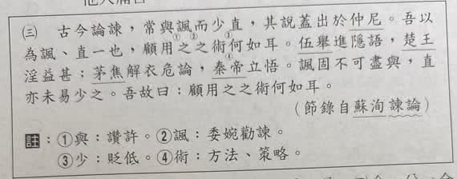
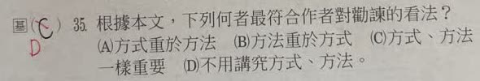

分享原卷｜第 35 題
完整原題
作答所需文章／材料
古今論諫，常與諷而少直，其說蓋出於仲尼。吾以為諷、直一也，顧用之之術何如耳。伍舉進隱語，楚王淫益甚；茅焦解衣危論，秦帝立悟。諷固不可盡與，直亦未易少之。吾故曰：顧用之之術何如耳。 （節錄自蘇洵〈諫論〉） 註：①與：讚許。②諷：委婉勸諫。③少：貶低。④術：方法、策略。根據本文，下列何者最符合作者對勸諫的看法？
(A) 方式重於方法
(B) 方法重於方式
(C) 方式、方法一樣重要
(D) 不用講究方式、方法
先想一想，再查看答案、解說與原圖
原卷作答：原卷黑筆C，旁有紅筆D；依本文應選B
正確答案：B。「顧用之之術何如耳」強調實際運用的策略，較重於形式的選擇。
逐項解析
| 選項與原句 | 判讀 | 句意與判斷理由 |
|---|---|---|
| (A) 方式重於方法 | 不選 | 作者不認為委婉或直接的形式本身就能決定勸諫成效。 |
| (B) 方法重於方式 | 應選 | 「顧用之之術何如耳」強調實際運用的策略，較重於形式的選擇。 |
| (C) 方式、方法一樣重要 | 不選 | 文章反覆強調的是「術」，不是兩者等量齊觀。 |
| (D) 不用講究方式、方法 | 不選 | 作者非常重視運用之術，並非什麼都不用講究。 |
詳細說明與解題步驟
依本題用語，「方式」指諷諫或直諫這類表達形式；「方法」指如何實際運用、使勸諫奏效的技巧與策略，也就是文中的「術」。
作者先說「諷、直一也」，再用一個諷諫失敗與一個直諫成功的例子，最後重申「顧用之之術何如耳」。中心是成敗重在策略，而不在先把形式排出高下，所以選B「方法重於方式」。
原卷黑筆C，旁有紅筆D，但D的「不用講究」與作者重視「術」直接衝突。此題依本文訂為B，保留原卷作答以供核對，不將紅筆當成標準答案。
文章大意：古今談勸諫，人們常讚許委婉進言、貶低直接進言，這個觀點大概出自孔子。作者認為兩者沒有固定的優劣，關鍵是如何運用。伍舉用隱語勸諫，楚王卻更加荒淫；茅焦冒險直言，秦帝反而立刻醒悟。因此，委婉不一定全好，直接也不能輕易貶低，仍須看運用的策略。
核對註記：已核對題幹、全部選項與必要材料；教材對應課次未確認，歸綜合。
原圖（僅本題）

